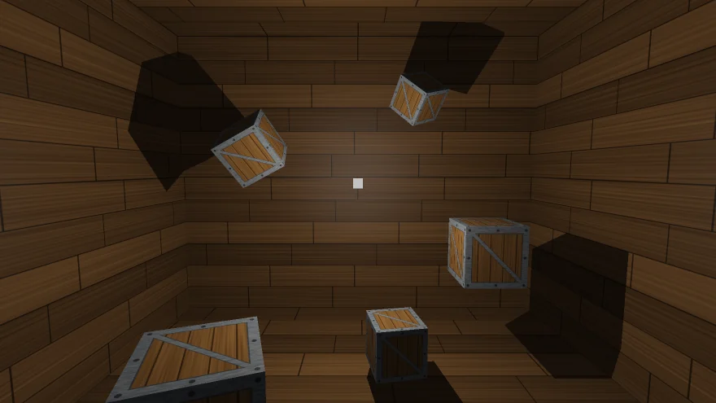

Advanced Lighting
Point Shadows#
A directional shadow map covers one direction. A point light shines in all directions, so one flat map cannot hold its shadows. The answer is a cube shadow map: six depth maps arranged around the light, sampled with the direction from the light to the fragment.
The plan#
- Render the scene six times from the light's position, once per cube face, storing each fragment's distance to the light.
- In the main pass, sample the cube with the vector from the light to the fragment and compare the stored distance with the actual one.
Storing linear distance instead of projected depth makes the comparison trivial and the bias easy to choose.
The cube depth texture#
let size = 1024
let descriptor = MTLTextureDescriptor.textureCubeDescriptor(pixelFormat: .depth32Float,
size: size,
mipmapped: false)
descriptor.usage = [.renderTarget, .shaderRead]
descriptor.storageMode = .private
shadowCube = device.makeTexture(descriptor: descriptor)!
const NS::UInteger size = 1024;
MTL::TextureDescriptor* descriptor = MTL::TextureDescriptor::textureCubeDescriptor(
MTL::PixelFormatDepth32Float, size, false);
descriptor->setUsage(MTL::TextureUsageRenderTarget | MTL::TextureUsageShaderRead);
descriptor->setStorageMode(MTL::StorageModePrivate);
shadowCube = device->newTexture(descriptor);
Six views#
Use the left-handed helpers and the face table from the Cubemaps chapter. Each face has a 90 degree field of view and an aspect ratio of 1, so the six frustums fit together exactly:
let farPlane: Float = 25
let projection = float4x4(perspectiveLHFov: .pi / 2, aspect: 1, near: 0.1, far: farPlane)
let faces: [(direction: Float3, up: Float3)] = [
([ 1, 0, 0], [0, 1, 0]),
([-1, 0, 0], [0, 1, 0]),
([ 0, 1, 0], [0, 0, -1]),
([ 0, -1, 0], [0, 0, 1]),
([ 0, 0, 1], [0, 1, 0]),
([ 0, 0, -1], [0, 1, 0]),
]
let faceMatrices = faces.map { face in
projection * float4x4(lookAtLH: lightPosition,
center: lightPosition + face.direction,
up: face.up)
}
const float farPlane = 25.0f;
simd::float4x4 projection = perspectiveLH(float(M_PI) / 2, 1.0f, 0.1f, farPlane);
struct CubeFace { simd::float3 direction, up; };
const CubeFace faces[6] = {
{{ 1, 0, 0}, {0, 1, 0}},
{{-1, 0, 0}, {0, 1, 0}},
{{ 0, 1, 0}, {0, 0, -1}},
{{ 0, -1, 0}, {0, 0, 1}},
{{ 0, 0, 1}, {0, 1, 0}},
{{ 0, 0, -1}, {0, 1, 0}},
};
simd::float4x4 faceMatrices[6];
for (int i = 0; i < 6; i++) {
faceMatrices[i] = projection * lookAtLH(lightPosition, lightPosition + faces[i].direction, faces[i].up);
}
Render one pass per face, selecting the face through the attachment's slice:
for face in 0..<6 {
let pass = MTLRenderPassDescriptor()
pass.depthAttachment.texture = shadowCube
pass.depthAttachment.slice = face
pass.depthAttachment.loadAction = .clear
pass.depthAttachment.clearDepth = 1.0
pass.depthAttachment.storeAction = .store
let encoder = commandBuffer.makeRenderCommandEncoder(descriptor: pass)!
encoder.setRenderPipelineState(pointShadowPipelineState)
encoder.setDepthStencilState(depthState)
encoder.setFrontFacing(.clockwise) // the left-handed view mirrors the scene
var uniforms = PointShadowUniforms(viewProjection: faceMatrices[face],
lightPosition: lightPosition,
farPlane: farPlane)
drawScene(encoder, &uniforms)
encoder.endEncoding()
}
for (int face = 0; face < 6; face++) {
MTL::RenderPassDescriptor* pass = MTL::RenderPassDescriptor::alloc()->init();
pass->depthAttachment()->setTexture(shadowCube);
pass->depthAttachment()->setSlice(face);
pass->depthAttachment()->setLoadAction(MTL::LoadActionClear);
pass->depthAttachment()->setClearDepth(1.0);
pass->depthAttachment()->setStoreAction(MTL::StoreActionStore);
MTL::RenderCommandEncoder* encoder = commandBuffer->renderCommandEncoder(pass);
encoder->setRenderPipelineState(pointShadowPipelineState);
encoder->setDepthStencilState(depthState);
encoder->setFrontFacingWinding(MTL::WindingClockwise); // the left-handed view mirrors the scene
PointShadowUniforms uniforms{faceMatrices[face], lightPosition, farPlane};
drawScene(encoder, uniforms);
encoder->endEncoding();
pass->release();
}
Six passes can be merged into one with layered rendering, as described in Life Without Geometry Shaders. Start with the loop; it is easier to debug.
Writing distance as depth#
The fragment function overrides the depth value with the linear distance to the light, scaled into the 0 to 1 range:
struct PointShadowOut {
float4 position [[position]];
float3 worldPosition;
};
struct DepthOut {
float depth [[depth(any)]];
};
vertex PointShadowOut vertex_pointShadow(VertexIn in [[stage_in]],
constant PointShadowUniforms &uniforms [[buffer(1)]]) {
PointShadowOut out;
float4 world = uniforms.model * float4(in.position, 1.0);
out.position = uniforms.viewProjection * world;
out.worldPosition = world.xyz;
return out;
}
fragment DepthOut fragment_pointShadow(PointShadowOut in [[stage_in]],
constant PointShadowUniforms &uniforms [[buffer(1)]]) {
DepthOut out;
out.depth = length(in.worldPosition - uniforms.lightPosition) / uniforms.farPlane;
return out;
}
[[depth(any)]] lets a fragment function replace the depth computed by the rasterizer. The pipeline has a fragment function this time, but still no color attachment.
Sampling the cube#
In the main pass:
static float calcPointShadow(float3 worldPosition, float3 lightPosition, float farPlane,
depthcube<float> shadowCube, sampler s) {
float3 lightToFragment = worldPosition - lightPosition;
float currentDepth = length(lightToFragment) / farPlane;
float closestDepth = shadowCube.sample(s, lightToFragment);
float bias = 0.05 / farPlane;
return currentDepth - bias > closestDepth ? 0.0 : 1.0;
}
The direction does not need to be normalized. The cube picks the face and texel by itself. With a comparison sampler you can write it as shadowCube.sample_compare(s, lightToFragment, currentDepth - bias) and get hardware filtering as a bonus.
Soft edges#
For a 2D map we averaged neighboring texels. For a cube, offset the sample direction instead. Twenty well-spread offsets give a good result:
const float3 offsets[20] = {
{ 1, 1, 1}, { 1, -1, 1}, {-1, -1, 1}, {-1, 1, 1},
{ 1, 1, -1}, { 1, -1, -1}, {-1, -1, -1}, {-1, 1, -1},
{ 1, 1, 0}, { 1, -1, 0}, {-1, -1, 0}, {-1, 1, 0},
{ 1, 0, 1}, {-1, 0, 1}, { 1, 0, -1}, {-1, 0, -1},
{ 0, 1, 1}, { 0, -1, 1}, { 0, -1, -1}, { 0, 1, -1},
};
float lit = 0.0;
float radius = 0.02 * length(lightToFragment);
for (int i = 0; i < 20; i++) {
float closest = shadowCube.sample(s, lightToFragment + offsets[i] * radius);
lit += currentDepth - bias > closest ? 0.0 : 1.0;
}
lit /= 20.0;
Scaling the radius with distance makes shadows sharper near the caster and softer farther away, which is how real shadows behave.

Cost#
Point shadows render the scene six extra times per light. Keep the number of shadow-casting point lights small, cull objects per face, and update the map only when the light or the objects near it move.
Exercises#
- Visualize the stored distance by returning
float4(float3(closestDepth), 1).Show solution
Return the sampled value as a gray color from the main fragment function. Surfaces close to the light are dark and far ones bright, and each object is surrounded by a darker halo of the same shape on the walls behind it, which is its shadow before the comparison.
- Convert the six passes into a single layered pass.
Show solution
Set
renderTargetArrayLength = 6on the pass, setinputPrimitiveTopology = .triangleon the pipeline, and draw every object with an instance count of 6. In the vertex function useinstanceID % 6as the face: pick that face's matrix and write the face index to an output marked[[render_target_array_index]].